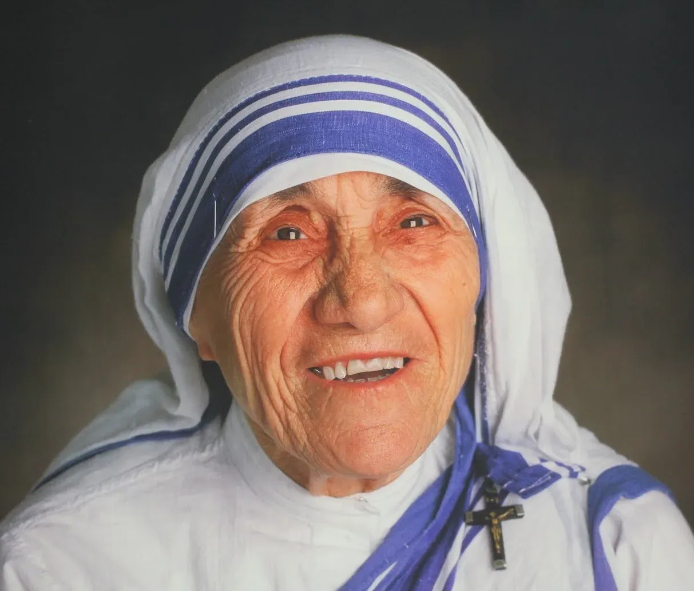
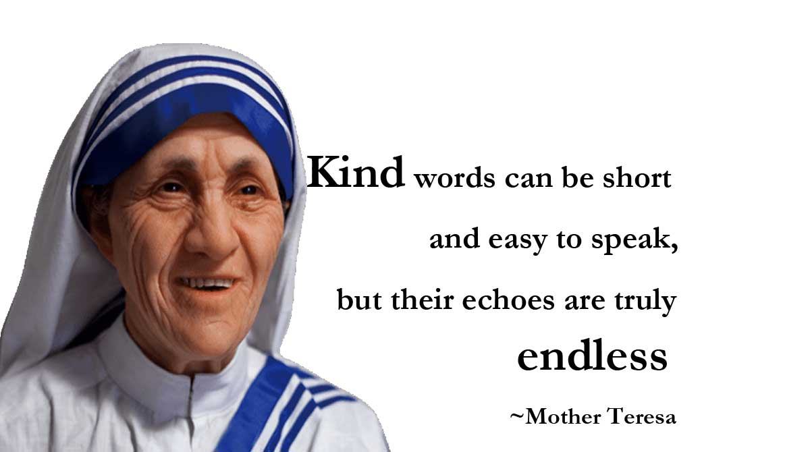

Mother Teresa
26 August 1910 – 5 September 1997
not all of us can do great things. but we can do small things with great love
Mother Teresa-Nun was the founder of the Order of the Missionaries of Charity,
A Roman Catholic congregation of women dedicated to helping the poor.
Time line of Mother Teresa:
- 1910 - born Anjeze Gonxhe, Albania
- 1917 - Her father Died when she was 8 years old.
- 1928- She left home to join the Sister of Loreto in Rathfanham, Ireland and learn
English with the view of becoming a missionary.
- 1929- She arrived to India.
- 1931 - Teresa took her first religious vows.
- 1937 - Took her solemn vows, when she was a teacher at the Loreto convent school
in Entally, Eastern Calcutta.
- 1944 - She was appointed as headmistress.
- 1948 - Bagan work with the poor.
- 1950 - Received vatican permission for charity.
- 1952- Opened her first hospice with help from Calcutta officials.
- 1955 - Opened "Nirmala Shishu Bhavan".It's a children's for orphans and homeless youth.
- 1965 - Opened houses in Venezuela, Italy, Austria.
- 1982 - Rescued 37 children trapped in front-line hospital by brokering a temporary cease-fire
between the Israeli army and Palestenian guerrillas.
- 1991 - Returned to Albania opening a Missionaries of charity brothers home in Tirana.
- 1996 - Operated 517 missions in over 100 countries.
- 1997- Died at aged 87.
Tribute:
One of the greatest gifts God has given to each of us is our memory. Because of it we have images of wonderful things that have happened to us in the past by people who were so concerned about us. On a larger scale, the world now has a great memory of a woman called Mother Teresa. A simple nun who lived a simple life not just preaching the gospel, but living the gospel she preached. Anyone who has seen a picture in the newspaper about her or a television show about her has a great memory. She not only brought Christ to the people of the world, she was Christ in the memory of many who were touched by her. The leper, the Aids patient, the poor, the indentured, many of them have had dismal memories of the past, but this woman gave them a memory they will cherish forever. They will have a reason for hope. They will have a better life waiting them. They will have a God deep in love with them. No woman in the last one hundred years has created an impact on the memory of mankind as has Mother Teresa. When Christ gave the words, "when I was hungry, you gave me to eat; when I was thirsty you gave me to drink and naked you clothed me", Mother Teresa helped those words become reality in the lives of the unfortunate who had very few good memories. Her legacy will be known for compassion. Thousands of words have been spoken about her and what she has done for the downtrodden and the unfortunate. She gave love and it was unconditional. Dylan Thomas once said that love is gratitude with a memory. To Mother Teresa we can simply say, "thanks for the memories".
Mother Teresa Quotes:
- "Is for people who lived like animals to die like angels—loved and wanted." _ Mother Teresa
- "Be faithful in small things because it is in them that your strength lies." Mother Teresa
- "Joy is strength." ― Mother Teresa
- "The person who gives with a smile is the best giver because God loves a cheerful giver." ― Mother Teresa
- "One of the greatest diseases is to be nobody to anybody." Mother Teresa
- "Love to be real, it must cost—it must hurt—it must empty us of self." ― Mother Teresa
- "Our life of poverty is as necessary as the work itself. Only in heaven will we see how much we owe to the poor for helping us to love God better because of them." _Mother Teresa
- "We need to find God, and he cannot be found in noise and restlessness. God is the friend of silence. See how nature- trees, flowers, grass- grows in silence; see the stars, the moon and the sun, how they move in silence… We need silence to be able to touch souls." ― Mother Teresa
